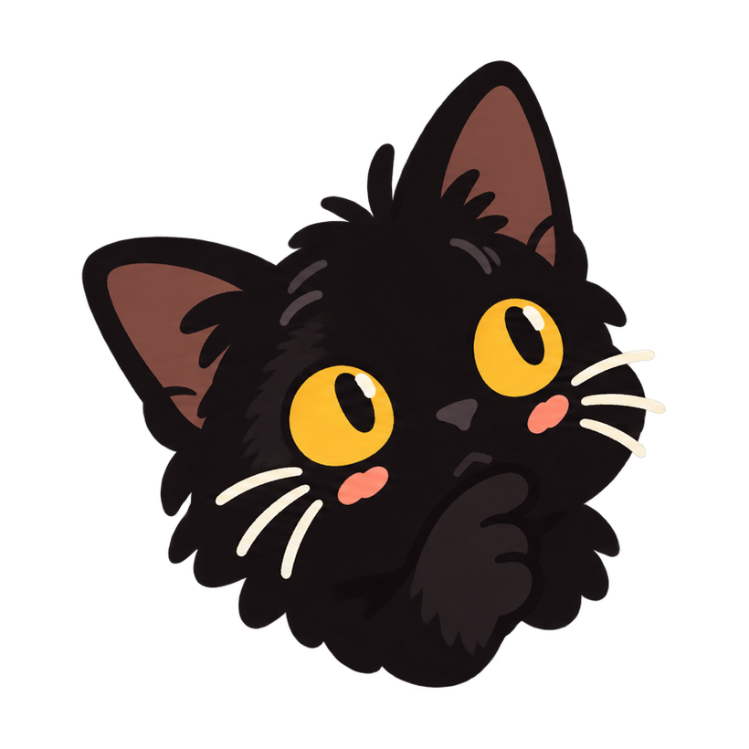

Seu espaço de estudos
Seu futuro começa
com pequenos passos ✨
Planeje seus estudos, cuide da sua rotina e descubra novos caminhos para aprender. Um dia de cada vez!
Próximas atividades
Organizadas por prazo
Sua semana
Tempo de estudo planejado
Seu assistente de estudos
Receba sugestões com indicação das fontes e uma trilha de estudo que respeite suas disciplinas.
Meu cronograma
Registre sessões e planeje sua semana de estudos.
Quer editar seus horários?
O calendário é apenas para consulta. Gerencie as sessões na área Minhas atividades.
✨ Criar meu plano de estudos
Escolha quando pode estudar, gere uma sugestão e confirme para adicionar ao calendário.
Minhas atividades
Organize entregas e acompanhe o que já concluiu.
Minhas sessões de estudo
Edite ou exclua os horários que aparecem no calendário.
Assistente de estudos
Orientações e materiais acadêmicos para apoiar seu planejamento.
O que você precisa estudar?
Informe o assunto e o objetivo de aprendizagem.
Sem API configurada, o sistema exibe um plano demonstrativo. Não apresenta conteúdo gerado localmente como resposta de IA.
Minha trilha de estudo
Personalize um roteiro de estudos.

Seu plano de estudo aparecerá aqui.
Buscar publicações relacionadas
Pesquisa de metadados acadêmicos pelo Crossref; confira cada artigo antes de utilizá-lo.
A busca de publicações funciona ao iniciar o servidor local com internet. Títulos e DOIs são metadados, não uma garantia de qualidade do estudo.
Bibliotecas e fontes para começar
Links para portais reconhecidos. Cada publicação ainda deve ser avaliada individualmente.
Estudante
Universidade não informada
🎓 Minha formação
📚 Minhas disciplinas
🗓 Minha disponibilidade
✨ Preferências de estudo
As informações ficam salvas neste navegador. Para alterar os dados, utilize Editar perfil.
Editar informações acadêmicas
Meu perfil acadêmico
Informe suas disciplinas e os horários em que pode estudar.
Dados acadêmicos
Excluir meu perfil
Remove apenas os dados acadêmicos e a foto deste navegador. Suas atividades, sessões de estudo e avaliações não serão excluídas.
Minha disponibilidade semanal
Escolha os dias e uma faixa de horário de estudo em cada um deles. Períodos não preenchidos não serão utilizados.
Planejamento criado por regras determinísticas, sem IA. Antes de salvar, confira conflitos e prazos.
Confira as sessões sugeridas
Estas sessões ainda não estão no calendário. Clique em confirmar para salvá-las.
Salve seu perfil e gere um cronograma para visualizar a proposta.
Avaliação de usabilidade
Ajude a melhorar o StudyFlow após experimentar suas funcionalidades.
💙 Conte como foi sua experiência
Depois de testar o StudyFlow, responda ao formulário. Suas respostas serão registradas no Google Forms, conforme as informações e o consentimento apresentados nele.
O link do formulário deve ser configurado pela pesquisadora antes de compartilhar o sistema.
Antes de avaliar, experimente estas tarefas
- Cadastre ou edite seu perfil acadêmico.
- Crie e confirme um plano de estudos.
- Cadastre uma atividade com prazo e prioridade.
- Encontre uma sessão de estudo no calendário.
- Explore a área de materiais acadêmicos, se estiver disponível no ambiente de teste.
Participe voluntariamente. Não inclua dados pessoais desnecessários nas respostas.